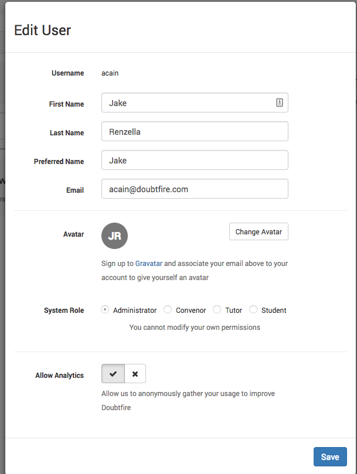

Written by Jake Renzella on Jul 18 2018
In Doubtfire, your profile contains the following customisable information:
- First Name
- Last Name
- Preferred Name
- Avatar
- Analytics
To customise your profile, log in to Doubtfire and select the dropdown in the top right corner of the screen and select profile:

The modal which appears will allow you to customise all profile fields in Doubtfire:

Note: Doubtfire uses Gravatar for changing your profile picture, selecting change avatar will open the appropriate Gravatar documentation.